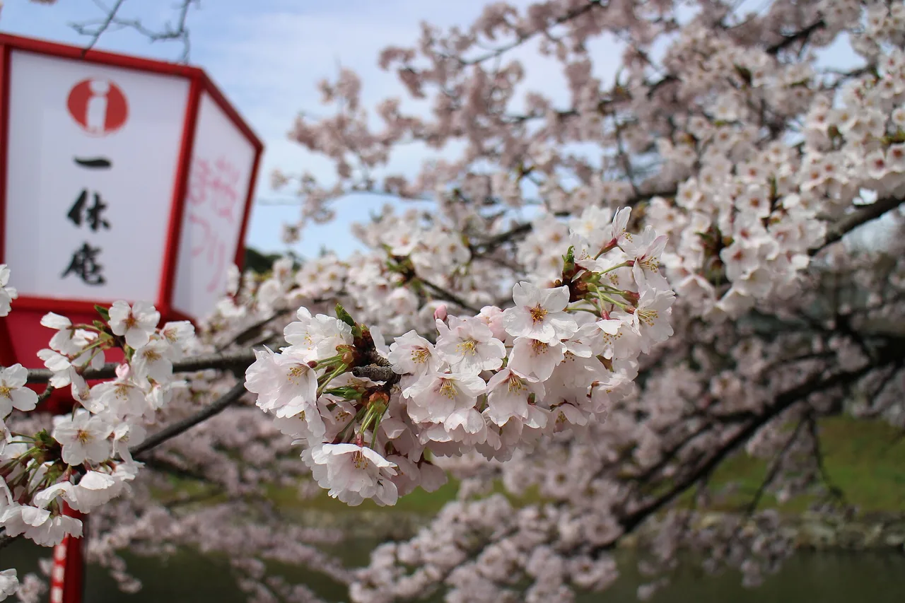

Shiga 旅遊指南（為日語學習者撰寫）
重點
滋賀環繞Lake Biwa——日本最大的淡水湖，也是世界上最古老的湖泊之一，擁有約200公里的環形騎行路線。該都道府縣將湖邊島嶼神社和遊船與江戶時期城鎮和商人運河配對，距京都只有短短火車車程。
📍 必看: Hikone Castle · 🥢 必嚐: Funazushi (fermented carp sushi) · 來源
環繞日本最大的湖泊，擁有壯麗的城堡。

🍜 美食 ▰▱▱▱▱ 🏯 文化 ▰▰▰▰▰ 🏙 城市 ▰▰▰▰▱ 🚄 交通 ▰▰▱▱▱ 🌿 自然 ▰▰▰▱▱
🥢 必嚐: Funazushi (fermented carp sushi) · 📍 必看: Hikone Castle
🗣 これは地元の味ですね。 Kore wa jimoto no aji desu ne.
滋賀縣以琵琶湖聞名，這是日本最大的淡水湖。彥根城是現存少數幾座原汁原味的日本城堡之一。
必看景點
★ Hikone Castle★ Hieizan Enryakuji★ Lake Biwa (Biwako)💎 Hachiman-bori Canal boat cruise (Omihachiman)💎 Koka Ninja Village (Koka City)
- Lake Biwa
- Hikone Castle（原始天守閣）
- Enryaku-ji 寺廟，位於比叡山（聯合國教科文組織世界遺產）
- Miho Museum
必吃美食
★ Funazushi (fermented carp sushi)★ Omi beef (Omi-gyu)★ Omi champon💎 Aka konnyaku (red konjac)💎 Club Harie Baumkuchen at La Collina Omihachiman
近江牛和funazushi（一種古老的發酵壽司）。
如何前往與最佳季節
如何前往: Ōtsu/Hikone 距離 Kyoto 約10–50分鐘車程。
最佳季節: 四季皆宜；是京都行程的完美延伸。
學個日語
きれいですね。
Kirei desu ne. — "琵琶湖，日本最大的湖泊"
在地詞彙
琵琶湖
Biwa-ko — 琵琶湖，日本最大的湖泊
💡 小提醒
Hikone Castle 是真正的原始天守閣——比日本許多你看到的「城堡」都更珍貴罕見。
資料來源: Japan National Tourism Organization (JNTO).
事實依官方旅遊資訊查核，觀點為我們所有。